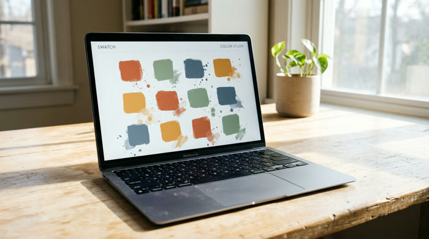
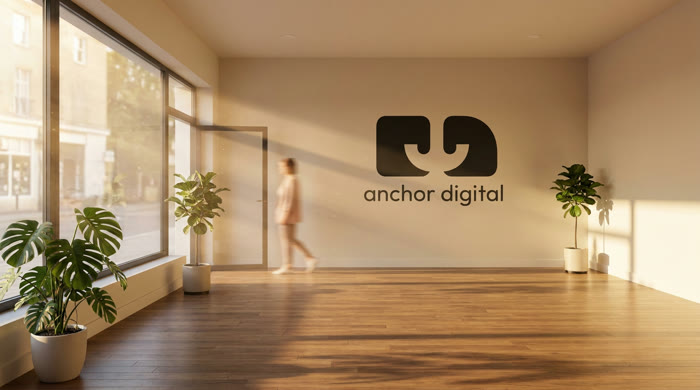
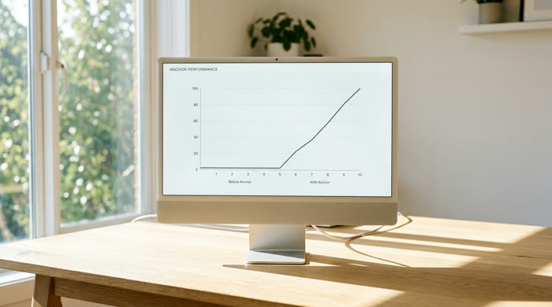

Website Design & Development
Fully custom, conversion-focused websites built from the ground up. No templates, ever: every homepage starts as a concept built around your brand.

Brand Digital Systems
We build what your brand needs to capture leads and grow an audience you actually own, with modern features that feel current, not off-the-shelf.

Ongoing Maintenance & Consulting
We stay in your corner after launch. Monthly care plans keep your site fast, secure, and evolving, with SEO monitoring and consulting built in.
02 · work
Every project here started as an empty file and a conversation.
Out of respect for client privacy, we don't showcase the majority of our work here. Ask us during a call and we're happy to share more.
03 · team
Meet our founders.
Click the buttons to read about our nonprofit initiative work. →
04 · testimonials
What clients say.
We're collecting these from recent clients now, real quotes will land in this grid, not placeholders. Ask us directly during a call if you'd like to hear from one sooner.
A client story is landing here soon.
Another one is on its way too.
This spot is saved for a third.
05 · contact
Start a project
Tell us what you need. We reply to everything, usually the same day.
adam@anchordigitalco.com
jackson@anchordigitalco.com
Response time
Usually the same day
anchor digital
Step inside the studio.
Everything below is real: our work, our people, and how to reach us.
01 · what we do
We close the gap.
A digital development and strategy company helping small businesses and organizations modernize their digital presence. Every quote gets built from a conversation instead of a menu.
Website Design & Development
We create fully custom, conversion-focused websites from the ground up. No templates, no shortcuts: every pixel is intentional.
Brand Digital Systems
We build what your brand needs to capture leads, turn them into customers, and grow an audience you actually own.
Ongoing Maintenance & Consulting
We stay in your corner after launch. Monthly care plans keep your site fast, secure, and evolving with your business.
02 · work
Every project here started as an empty file and a conversation.
Out of respect for client privacy, we don't showcase the majority of our work here. Ask us during a call and we're happy to share more.
03 · team
Meet our founders.
04 · testimonials
What clients say.
We're collecting these from recent clients now, real quotes will land in this grid, not placeholders. Ask us directly during a call if you'd like to hear from one sooner.
A client story is landing here soon.
Another one is on its way too.
This spot is saved for a third.
05 · contact
Start a project
Tell us what you need. We reply to everything, usually the same day.
Prefer email directly? adam@anchordigitalco.com · jackson@anchordigitalco.com